PF ou PJ?Vou pagar duas vezes?Como ficam o Receita Saúdee a nota?
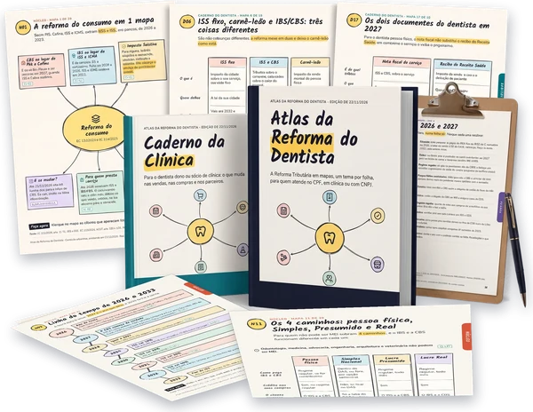
Uma dúvida por mapa, em três partes: como você está hoje, o que muda com a reforma e o que conferir sozinho, com o sinal de quando vale procurar um contador. Uma parte dos mapas é só da odontologia.
Você já cuida dos pacientes, do consultório e das contas. Aqui, cada dúvida de imposto tem a folha dela.
Preciso de contador? Quando vale procurar um
O que pagar, o que emitir e quando
PF ou PJ: o que pesa em cada lado
Carnê-leão e IBS/CBS são coisas diferentes
Para que servem o Receita Saúde e a nota
O que muda em 2027 para quem atende no CPF
Clínica de colega: o que já tem regra
Os 60% da saúde na alíquota do IBS e da CBS No Simples, a conta é outra.
Recibos e o que entra no livro-caixa
Perguntas prontas, se um dia procurar um contador
Você recebe o acesso [[no e-mail / área de membros / WhatsApp]] logo depois do pagamento.
Olha como fica o seu caso numa folha
Cada mapa responde uma pergunta e mostra o que já é regra e o que ainda está em discussão.
A capa do Atlas
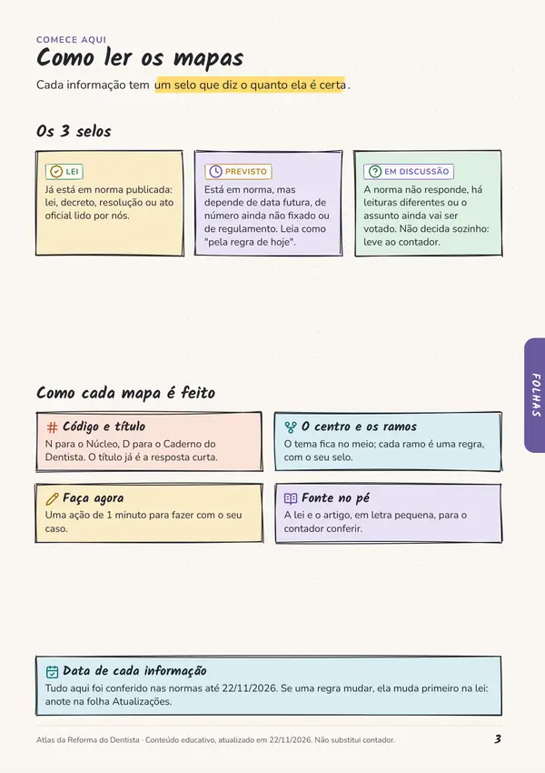
Os 3 selos de certeza
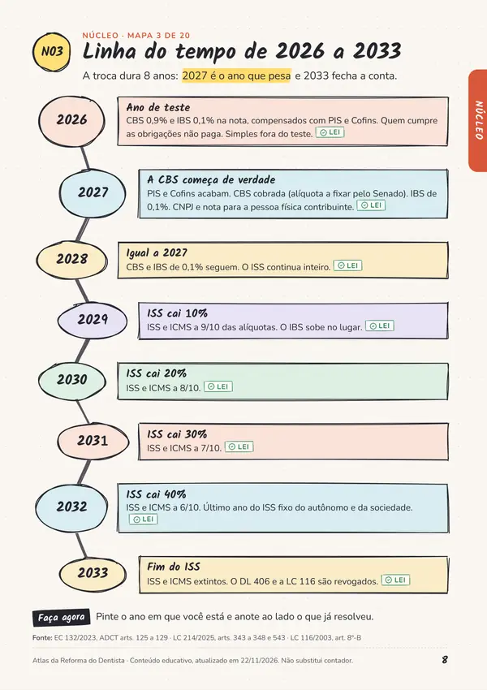
Linha do tempo até 2033
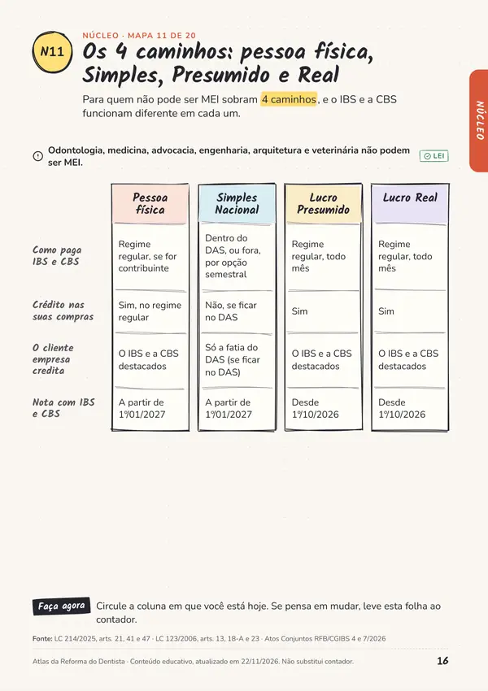
Os 4 caminhos
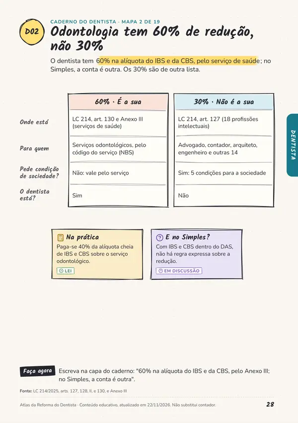
Os 60% da saúde
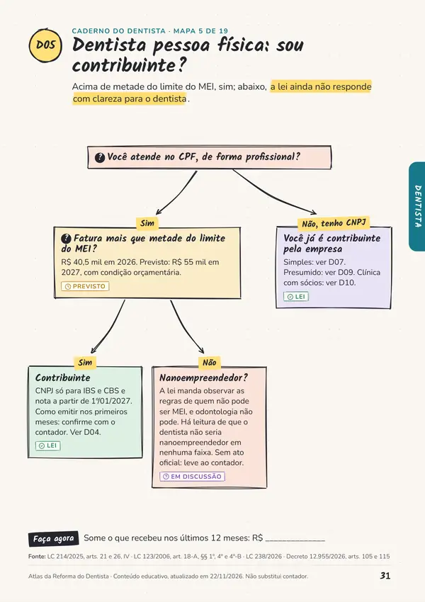
Sou contribuinte?
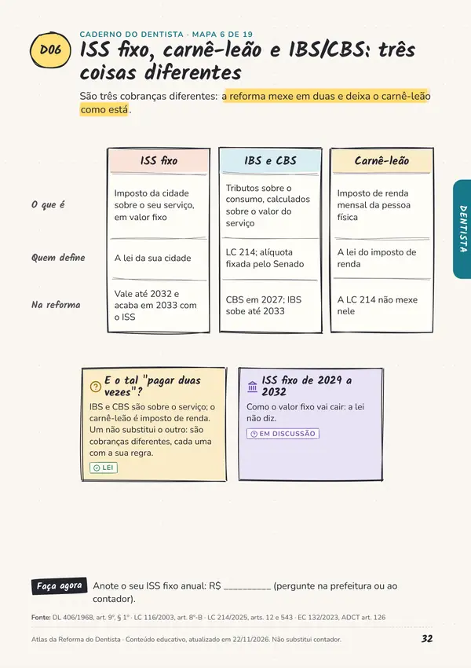
ISS, carnê-leão e IBS/CBS
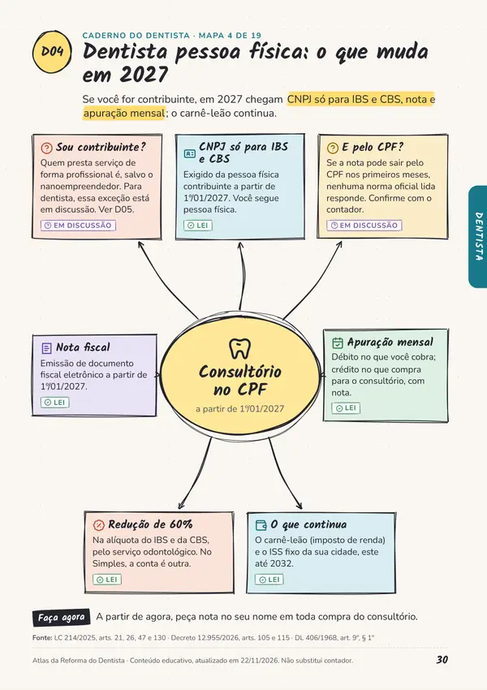
Pessoa física em 2027
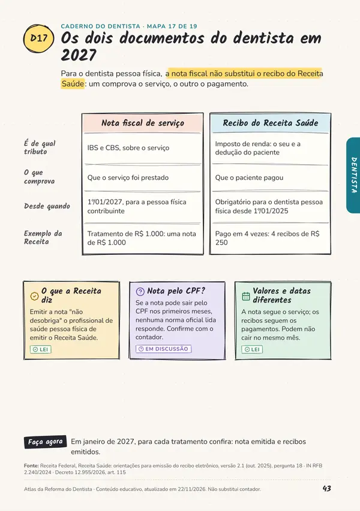
Nota e recibo em 2027
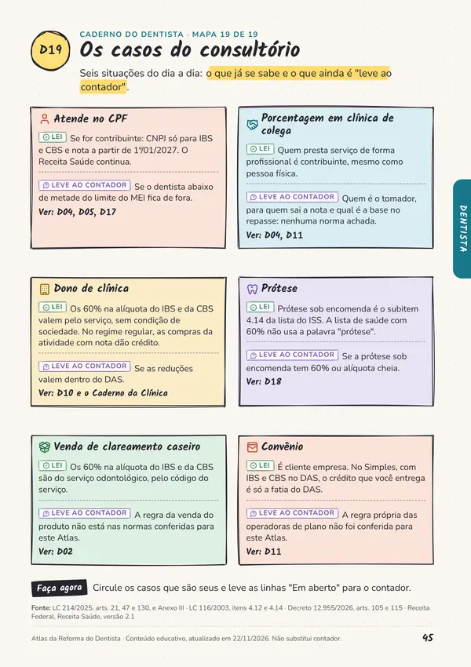
Os casos do consultório
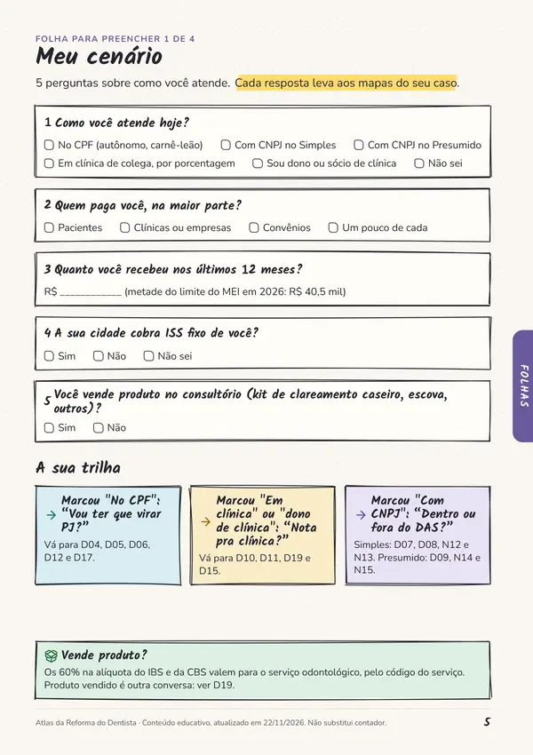
Meu cenário, para preencher
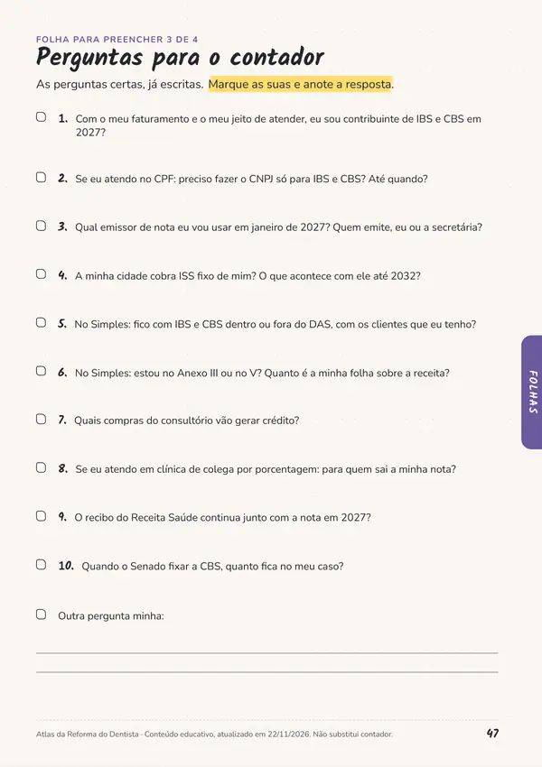
Perguntas para o contador
Arraste para ver mais →
O Atlas da Reforma do Dentista tem 3 partes:
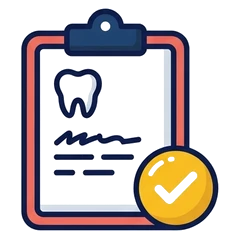
Parte 1 · Como você está hoje
Quais são as obrigações fiscais de um dentista? Antes de falar da reforma, a Parte 1 mostra o que vale hoje para quem atende no CPF, o que vale para quem tem CNPJ e quais obrigações você já tem.
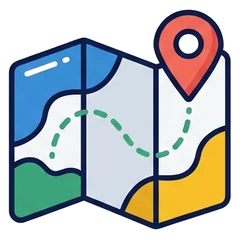
Parte 2 · O que muda com a reforma
Mapas só da odontologia: o CNPJ e a nota em 2027, carnê-leão e IBS, Receita Saúde e nota, clínica e repasse, e as datas até 2033.
Parte 3 · O que conferir e quando chamar um contador
Você responde 5 perguntas, segue a trilha do seu caso e sai sabendo o que dá para conferir sozinho e quais pontos pedem um profissional.
LEIPREVISTOEM DISCUSSÃO
Selo de certeza e fonte em cada mapa
Cada informação tem o selo dela: lei, previsto ou em discussão, com a data. A lei e o artigo ficam no pé. O que ainda não tem resposta fechada vem com o aviso "leve ao contador". Quer dizer que ali vale ouvir um profissional.
Uma pergunta por folha, no celular ou impressa em A4.
Para você entender o seu caso sem virar especialista em imposto
Chega de catar resposta de vídeo em vídeo. E aquele boato que circula entre colegas aparece do lado do que a regra diz
Você lê só o que vale para o seu jeito de atender: no CPF, em clínica ou com CNPJ
Aquela dúvida no fundo da cabeça vira uma lista que você mesmo confere
Você reconhece quando vale procurar um contador, e não precisa decidir isso no susto
Você vê as datas da reforma, de 2026 a 2033, e 2027 não chega de surpresa no consultório
Você abre a folha Meu cenário, responde 5 perguntas e segue as setas até os mapas do seu caso. No caminho, vai marcando na folha Perguntas para o contador o que vale para você. E volta para o paciente da próxima hora sabendo por onde começar.
Você tem 7 dias para abrir, ler e imprimir os mapas. Se nesse tempo você achar que:
o material não deixou o seu caso mais claro,
os mapas não ajudaram você a saber o que conferir,
ou simplesmente não quiser ficar com ele,
é só mandar um e-mail para [[e-mail de suporte]] e a gente devolve 100% do valor. Ninguém vai pedir explicação.
A garantia existe porque você está pagando por uma coisa que ainda não viu. É justo poder ver antes de decidir.
Como você recebe
Pague no Pix ou no cartão.
O Pix aprova na hora; o cartão, em minutos.
Receba o acesso.
Chega [[no e-mail / área de membros / WhatsApp]].
Abra no celular ou imprima em A4.
Tem uma versão feita para a tela e outra para qualquer impressora.
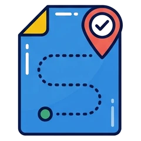
Comece pela folha Meu cenário.
É ela que mostra por qual mapa começar.
Perguntas frequentes
Serve. Foi pensado justamente para quem ainda cuida disso sozinho. O Atlas não faz a sua conta nem decide se você fica no CPF ou abre empresa: isso é trabalho de contador. Ele mostra o que vale para o seu jeito de atender, o que você confere por conta própria e quais pontos pedem um profissional. Se aparecerem vários no seu caso, vale procurar um, e você já chega sabendo o que perguntar.
Aplica. Além dos mapas que valem para todo profissional que presta serviço, tem mapas só da odontologia, com os casos do consultório: quem atende no CPF, quem recebe porcentagem em clínica de colega, dono de clínica, prótese, clareamento caseiro e convênio. O Receita Saúde, que é do imposto de renda e é obrigatório para o dentista que atende como pessoa física desde 2025, tem folha própria.
Não é, e nem precisa entender de imposto. É uma pergunta por folha, com seta, exemplo e palavra do dia a dia, e o termo técnico vem explicado no Glossário visual. Tem uma versão feita para a tela do celular e outra em A4 para imprimir.
Cada mapa traz no pé a lei e o artigo de onde a informação saiu, para você mesmo conferir. Cada informação tem selo (lei, previsto ou em discussão) e a data em que foi conferida. O que ainda não tem resposta fechada vem marcado. E o material é independente: não é do governo, da Receita nem do CRO. Vão mudar, porque a reforma ainda está em andamento. Por isso cada informação tem o selo e a data, e a folha Atualizações serve para você anotar o que mudou e em qual mapa.
Boa parte, sim. Só que está espalhada em lei, live, post e vídeo, e quase tudo foi feito para empresa ou para contador. O Atlas junta, deixa só o que é do dentista, marca o que é certo e o que está em aberto e põe numa ordem que você começa a usar em 15 minutos.
São coisas diferentes. Carnê-leão é imposto de renda. IBS e CBS são tributos sobre o serviço que você presta, e o CNPJ da pessoa física contribuinte é só para eles. Um não substitui o outro. Quanto cada um pesa no seu caso ainda depende de duas coisas: da alíquota da CBS, que o Senado ainda não fixou, e do jeito que você atende. O mapa "ISS fixo, carnê-leão e IBS/CBS: três coisas diferentes" põe os três lado a lado. O Pix não muda as regras. A própria Receita diz que não existe tributação de Pix nem de movimentação financeira. Se você atende como pessoa física, o pagamento de paciente que chega por Pix entra no carnê-leão e gera o Receita Saúde como qualquer outro pagamento.
É pagamento único: você paga uma vez, no Pix ou no cartão, e não tem mensalidade. E tem garantia de 7 dias: se não gostar, é só mandar um e-mail para [[e-mail de suporte]] e a gente devolve 100% do valor. Ninguém vai pedir explicação.
O Caderno do Dentista, de R$ 17,90, tem o Atlas da Reforma do Dentista completo, com as 3 partes. O Atlas Completo do Dentista, de R$ 27,90, tem tudo do Caderno e mais 6 bônus: Guia PF ou PJ?, Calendário fiscal do dentista, Receita Saúde sem complicação, Caderno da Clínica, Calculadora do crédito do cliente empresa e Planner da transição 2026 a 2033.
Saiba onde está pisando antes de 2027
Abra a folha Meu cenário, responda 5 perguntas e veja quais mapas são do seu caso. Preço de lançamento até [[DATA FIM DA OFERTA]].